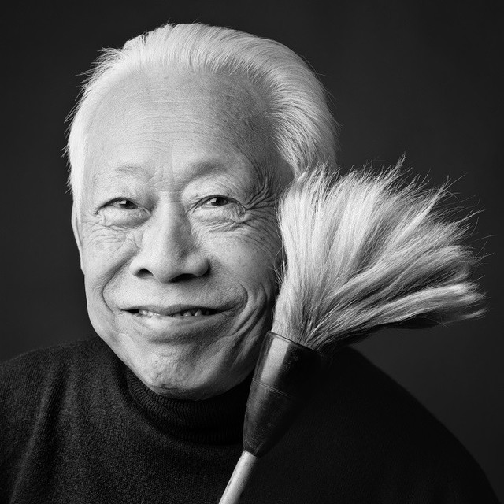

ZAO WOU-KI
Zao Wou-ki est certainement l’un des plus grands peintres de la deuxième moitié du XX ème siècle.
Célébré, exposé, collectionné à prix d’or dans le monde entier, il captive et fascine par ses oeuvres à la force fulgurante,
aux couleurs puissantes mais aussi par l’harmonie infinie qui s’en dégagent.
Démiurge habité, il exhalte les forces vives et les tourments de sa vie intérieure dans des créations de tempêtes, de lumières et d’obscurité, de vide et de matière, de chaos et de jaillissements. Sous son pinceau, sous son geste et ses couleurs, éclate un univers de sensations et de vie inconnu.